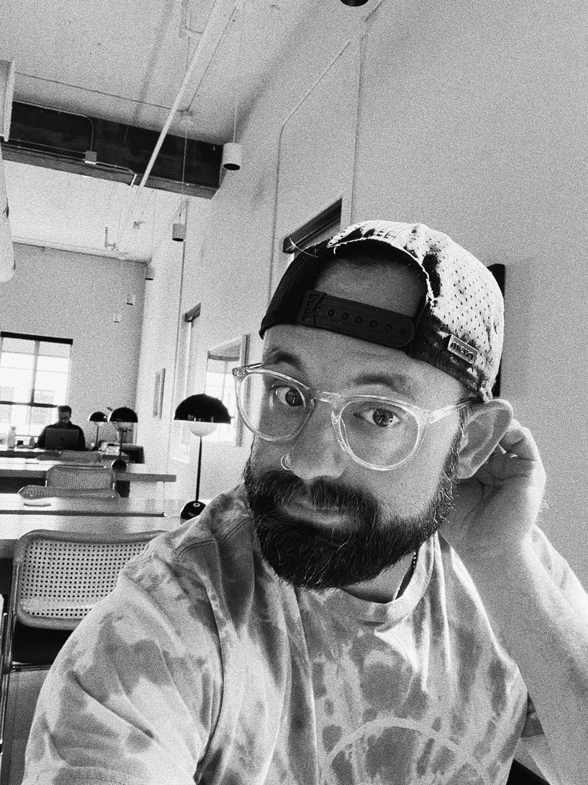

About

I lead UX design at Experian, where I help teams make complicated financial decisions easier for people to navigate.
I started in graphic design and moved into digital product design. At Experian, I built a team of eight direct reports, from junior to lead roles. I work with each person on a growth plan and advocate for their advancement.
I partner with product, research, and content to set design direction and connect it to business goals. In Marketplace, that has meant helping launch Insurance and Home and leading redesigns across Personal Loans and Credit Cards.
See the Experian work